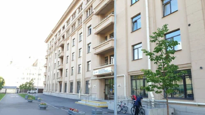

Nikita Belosheev
Es esmu Nikita Belosheev, man ir 19 gadi. Esmu dzimis un audzis Velikij Novgorodā. Pēc 9. klases es mācījos Sanktpēterburgā, kur es mācījos par programmētāju. Pēc tam es pārcēlos uz Rīgu, kur dzīvoju jau 1 gadu.
Mani hobiji ir programmēšana, un brīvajā laikā man patīk klausīties mūziku, īpaši stilā: reps un emo-reps. Mani iecienītākie mākslinieki ir Lil Peep un Noize MC.
Manas Mācību Iestādes
Skola Nr. 4

Sanktpēterburgas Valsts universitāte Aerokosmisko instrumentu inženierijas

Rīgas Tehniskā koledža
Manas Fotogrāfijas
13 gadi
14 gadi
16 gadi

19 gadi